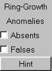

When you try skeleton plotting for yourself, you can turn on or off ring-growth anomalies:
- There will be square options for absent or false rings, as on the right
- Check one or both options to allow these growth anomalies
- Un-Check the options to disallow these growth anomalies
- Mouse click the "Restart" button
- Important point #1: With options checked:
- Ring-growth anomalies are only possible, not for certain (just like in real life!)
- Mouse click the "Hint" button to learn if your new core has ring-growth anomalies
- Mouse click the "Hint" button again to hide the hint
- Important point #2:
- When there are absent/false rings, include their dates when you find the dates
|
 |